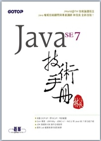
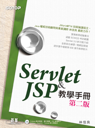

個人著/譯作 （現役）
我是一隻弱小的毛毛蟲，想像有天可以成為強壯的挖土機，擁有挖掘夢想的神奇手套！
電子郵件
Twitter
、
Facebook
、
Blog


線上文件
泛談文章
CodeData 專欄
（連載中...）
程式人專欄
（連載中...）
Twitter 語錄
（不定時更新）
學習筆記
（尚無更新）
非關語言
常見程式演算
（2011/10/14
更 新
）
電腦圖學入門
（2011/1/3
更 新
）
設計模式
（2012/11/8
更新
）
亂碼 1/2
（2012/12/18
更新
）
靜態語言 C/C++
C 語言
（2008/6/16
更新
）
C++
（2008/12/1
更新
）
GTK
（尚無更新）
Qt4
（2008/6/17
更新
）
靜態語言 Java / Scala
Scala
（2012/3/11
更新
）
Java 本質部份
（2011/10/18
更新
）
Java （上）
（2013/5/18
更新
）
Java （下）
（2009/7/23
更新
）
動態語言 Python / Ruby / JavaScript
Python
（2012/12/18
更新
）
Ruby
（2012/1/23
更新
）
Rails
（2013/3/27
更新
）
JavaScript 本質部份
（2013/4/16
更新
）
Java EE
Servlet/JSP
（2011/7/21
更 新
）
JSF
（尚無更新）
EJB3
（2009/7/11
更新
）
開源框架
JUnit
（2012/11/7
更新
）
Struts
（2010/10/16
更新
）
Spring
（2008/10/28
更新
）
Hibernate
（2011/3/11
更新
）
檔案下載
書籍試讀、投影片
Java SE 7 技術手冊相關資料
Servlet & JSP 教學手冊第二版相關資料
Spring 2.0 技術手冊全書開放下載
活動投影片
PyCon Taiwan 2013 Tutorial
2012 JCD - FP for Java
2012 Java TWO - Lambda
2011 Java TWO - Java SE 7
2010 JCD - Lambda/Closure
2009 JCD - 深入淺出 Web 容器
2009 Java TWO - OpenEJB
2007 JCD - Web 效能與安全
玩具
PageCleaner
HTML 5 Canvas Tetrix
XD
Java 2D Tetrix
EasyJShop